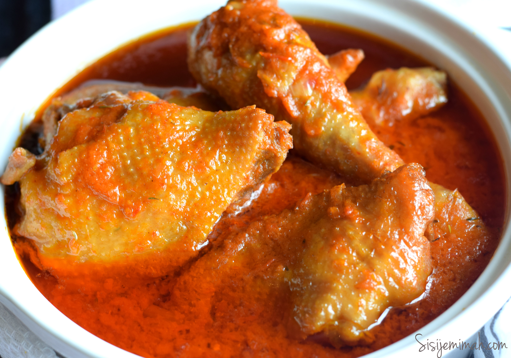

Chicken Stew

Description
Stew with chicken
Ingredients
- Tomatoes
- Peppers
- Onions
- Water
- Salt
- Maggi
- Seasonings (to taste)
- Boiled/Fried/Roasted/Grilled Chicken
- Vegetable oil
Steps
- Blend the tomatoes, peppers and onions till a smooth consistency
- Pour into a pot
- Add vegetable oil
- Add salt, maggi and seasonings of choice
- Fry until there is no oil in the pot
- Add as much or as little water depending on quantity of stew
- Add chicken into stew and stir